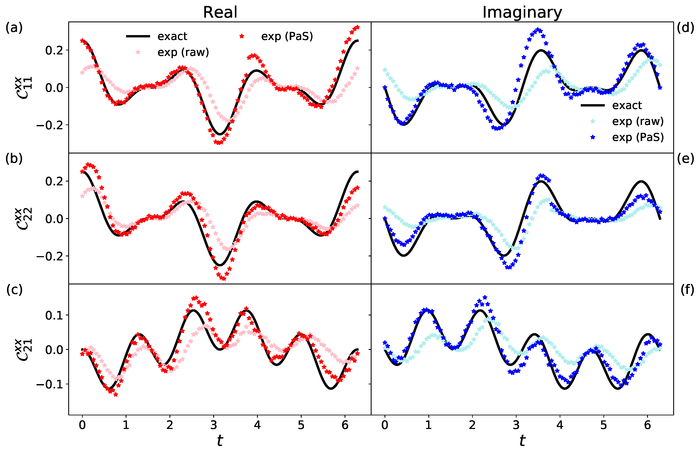
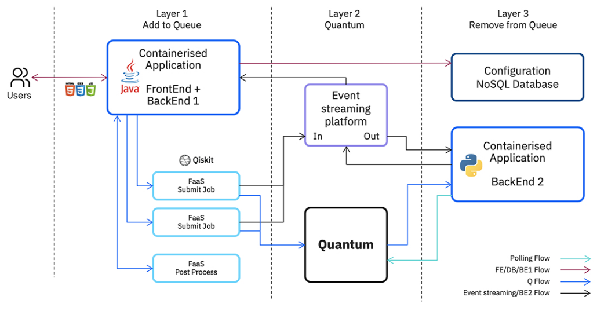
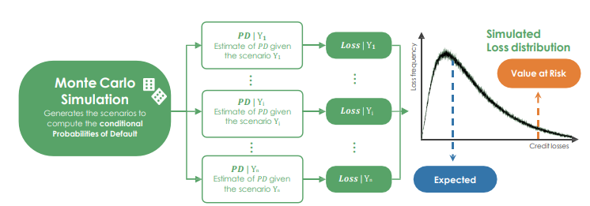
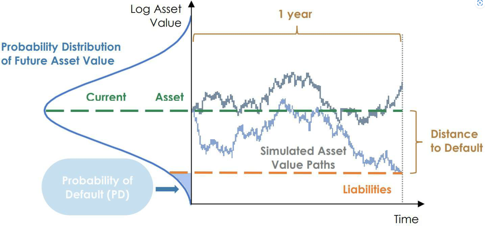

<!DOCTYPE HTML>
<!--
	Spectral by HTML5 UP
	html5up.net | @ajlkn
	Free for personal and commercial use under the CCA 3.0 license (html5up.net/license)
-->
<html>
	<head>
		<title>Quantum Publications</title>
		<meta charset="utf-8" />
		<meta name="viewport" content="width=device-width, initial-scale=1, user-scalable=no" />
		<link rel="stylesheet" href="../assets/css/main.css" />
		<link rel="icon" href="../images/myicon.png">
	</head>
	<body class="is-preload">

		<!-- Page Wrapper -->
			<div id="page-wrapper">

				<!-- Header -->
				<header id="header">
					<h1><a href="../index.html">Publications</a></h1>
					<nav id="nav">
						<ul>
							<li class="special">
								<a href="#menu" class="menuToggle"><span>Menu</span></a>
								<div id="menu">
									<ul>
										<li><a href="../index.html">Home</a></li>
										<!--<li><a href="generic.html">Generic</a></li>
										<li><a href="elements.html">Elements</a></li>
										<li><a href="#">Sign Up</a></li>
										<li><a href="#">Log In</a></li>-->
									</ul>
								</div>
							</li>
						</ul>
					</nav>
				</header>

				<!-- Main -->
					<article id="main">
						<header>
							<h2>Quantum Computing</h2>
							<p>The list of articles published on quantum computing </p>
						</header>
						<section class="wrapper style5">
							<div class="inner">
								<header>
								<h3>Simulating static and dynamic properties of magnetic molecules with prototype quantum computers - 2021 </h3>
								<p>Crippa L, Tacchino F, Chizzini M, Aita A, Grossi M, Chiesa A, Santini P, Tavernelli I, Carretta S.</p>
								</header>
								<p><span class="image left"></span>Magnetic molecules are
									 prototypical systems to investigate peculiar quantum mechanical phenomena. As such, simulating their static 
									 and dynamical behavior is intrinsically difficult for a classical computer, due to the exponential increase 
									 of required resources with the system size. Quantum computers solve this issue by providing an inherently 
									 quantum platform, suited to describe these magnetic systems. Here, we show that both the ground state properties 
									 and the spin dynamics of magnetic molecules can be simulated on prototype quantum computers, based on superconducting 
									 qubits. In particular, we study small-size anti-ferromagnetic spin chains and rings, which are ideal test-beds for 
									 these pioneering devices. We use the variational quantum eigensolver algorithm to determine the ground state wave-function 
									 with targeted ansatzes fulfilling the spin symmetries of the investigated models. The coherent spin dynamics are simulated
									  by computing dynamical correlation functions, an essential ingredient to extract many experimentally accessible properties, 
									  such as the inelastic neutron cross-section.</p>
								<p><a href="https://www.mdpi.com/2312-7481/7/8/117">Link of the publication</a></p>
								<hr />
								<header>
									<h3>A serverless cloud integration for quantum computing - 2021</h3>
									<p>Grossi M, Crippa L, Aita A, Bartoli G, Sammarco V, Picca E, Said N, Tramonto F, Mattei F</p>
									</header>
									<p><span class="image left"></span>Starting from the idea of Quantum Computing which is a concept that dates back to 80s, we come to
										the present day where we can perform calculations on real quantum computers. This sudden development of technology opens up new scenarios that quickly lead to the desire and the real possibility of
										integrating this technology into current software architectures. The usage of frameworks that allow
										computation to be performed directly on quantum hardware poses a series of challenges.
										This document describes a an architectural framework that addresses the problems of integrating an
										API exposed Quantum provider in an existing Enterprise architecture and it provides a minimum viable product (MVP) solution that really merges classical quantum computers on a basic scenario with
										reusable code on GitHub repository. The solution leverages a web-based frontend where user can
										build and select applications/use cases and simply execute it without any further complication. Every
										triggered run leverages on multiple backend options, that include a scheduler managing the queuing
										mechanism to correctly schedule jobs and final results retrieval. The proposed solution uses the upto-date cloud native technologies (e.g. Cloud Functions, Containers, Microservices) and serves as a
										general framework to develop multiple applications on the same infrastructure</p>
									<p><a href="https://arxiv.org/pdf/2107.02007.pdf">Link of the publication</a></p>
									<hr />
									<header>
										<h3>Towards practical Quantum Credit Risk Analysis - 2022</h3>
										<p>Dri E, Giusto E, Aita A, Montrucchio B</p>
										</header>
										<p><span class="image left"></span>In recent years a CRA (Credit Risk Analysis) quantum algorithm with a quadratic
											speedup over classical analogous methods has been introduced [1]. We propose a new variant of
											this quantum algorithm with the intent of overcoming some of the most significant limitations
											(according to business domain experts) of this approach. In particular, we describe a method to
											implement a more realistic and complex risk model for the default probability of each portfolio’s
											asset, capable of taking into account multiple systemic risk factors. In addition, we present a
											solution to increase the flexibility of one of the model’s inputs, the Loss Given Default, removing
											the constraint to use integer values. This specific improvement addresses the need to use real
											data coming from the financial sector in order to establish fair benchmarking protocols.
											Although these enhancements come at a cost in terms of circuit depth and width, they
											nevertheless show a path towards a more realistic software solution. Recent progress in quantum
											technology shows that eventually, the increase in the number and reliability of qubits will allow
											for useful results and meaningful scales for the financial sector, also on real quantum hardware,
											paving the way for a concrete quantum advantage in the field.
											The paper also describes experiments conducted on simulators to test the circuit proposed
											and contains an assessment of the scalability of the approach presented.</p>
										<p><a href="https://iopscience.iop.org/article/10.1088/1742-6596/2416/1/012002/pdf">Link of the publication</a></p>
										<hr />
										<header>
											<h3>A More General Quantum Credit Risk Analysis Framework - 2023</h3>
											<p>Dri E, Aita A, Giusto E, Ricossa D, Corbelletto D, Montrucchio B, Ugoccioni R</p>
											</header>
											<p><span class="image left"></span>Credit risk analysis (CRA)
												 quantum algorithms aim at providing a quadratic speedup over classical analogous methods. Despite this, experts 
												 in the business domain have identified significant limitations in the existing approaches. Thus, we proposed a new
												  variant of the CRA quantum algorithm to address these limitations. In particular, we improved the risk model for 
												  each asset in a portfolio by enabling it to consider multiple systemic risk factors, resulting in a more realistic
												   and complex model for each asset’s default probability. Additionally, we increased the flexibility of the loss-given-default
												    input by removing the constraint of using only integer values, enabling the use of real data from the financial sector
													 to establish fair benchmarking protocols. Furthermore, all proposed enhancements were tested both through classical
													  simulation of quantum hardware and, for this new version of our work, also using QPUs from IBM Quantum Experience in
													   order to provide a baseline for future research. Our proposed variant of the CRA quantum algorithm addresses the significant
													    limitations of the current approach and highlights an increased cost in terms of circuit depth and width. In addition,
														 it provides a path to a substantially more realistic software solution. Indeed, as quantum technology progresses, the 
														 proposed improvements will enable meaningful scales and useful results for the financial sector.</p>
											<p><a href="https://iopscience.iop.org/article/10.1088/1742-6596/2416/1/012002/pdf">Link of the publication</a></p>
											<hr />
											<header>
												<h3>Towards an end-to-end approach for quantum principal component analysis - 2023</h3>
												<p>Dri E, Aita A, Fioravanti T, Franco G, Giusto E, Ranieri G, Corbelletto D, Montrucchio B</p>
												</header>
												<p><span class="image left"></span>Quantum Machine Learning has gained significant 
													attention in recent years as a way to leverage the relationship between quantum information and machine learning. Principal 
													Component Analysis (PCA) is a fundamental technique in machine learning, and the potential for its quantum acceleration has been
													 extensively studied. However, an algorithmic end-to-end implementation remains challenging. This paper covers quantum PCA 
													 implementation up to extracting the principal components. We extend existing processes for quantum state tomography to extract 
													 the eigenvectors from the output state, addressing the challenges of dealing with complex amplitudes in the case of non-integer
													  eigenvalues. Finally, we apply our implementation to a practical quantum finance use case related to interest rate risk, and 
													  present the results of our experiments.</p>
												<p><a href="https://ieeexplore.ieee.org/stamp/stamp.jsp?arnumber=10313821">Link of the publication</a></p>
												<hr />
							</div>
						</section>
					</article>

				<!-- Footer -->
					<footer id="footer">
						<ul class="icons">
							
							<li><a href="https://github.com/aaita92" class="icon brands fa-github"><span class="label">Github</span></a></li>
							<li><a href="https://www.linkedin.com/in/antonello-aita/" class="icon brands fa-linkedin"><span class="label">LinkedIn</span></a></li>
							</ul>
						<ul class="copyright">
							<li>&copy; Antonello Aita</li><li>Design: <a href="http://html5up.net">HTML5 UP</a></li>
						</ul>
					</footer>

			</div>

		<!-- Scripts -->
			<script src="../assets/js/jquery.min.js"></script>
			<script src="../assets/js/jquery.scrollex.min.js"></script>
			<script src="../assets/js/jquery.scrolly.min.js"></script>
			<script src="../assets/js/browser.min.js"></script>
			<script src="../assets/js/breakpoints.min.js"></script>
			<script src="../assets/js/util.js"></script>
			<script src="../assets/js/main.js"></script>

	</body>
</html>